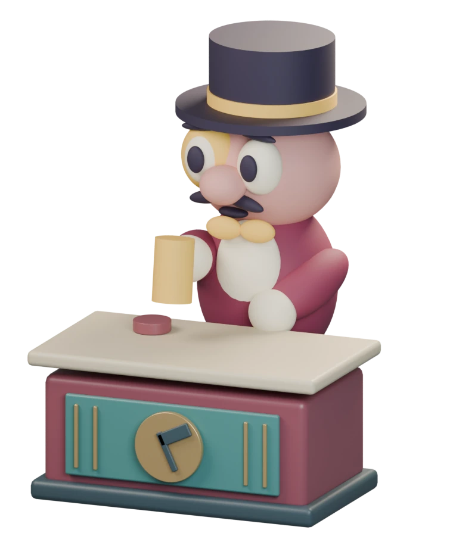

我想让玩家买东西的时候，也能和朋友抢一抢、互相试探，开点玩笑。
设计目标
拍卖可以拿到角色、装备等东西。
碰上正好能用的拍品，就会想买下来。可朋友也一直跟价，你又拿不准他是真的想要，还是想让你多花点钱。
比如，看到朋友很想要某件拍品，就故意加价，想让他多花点钱。结果朋友看出来了，突然不跟了，自己反而成了最后的买家。这是我想让拍卖里出现的情况。
想坑朋友，也有可能把自己坑了。每次加价，都得做好最后由自己买单的准备。我希望玩家能从这些意外里，留下一些搞笑有意思的片段。
一轮拍卖怎样进行
- 展示拍品
- 自由出价
- 拍卖师询价
- 成交或流拍
完整规则
展示拍品
开拍前先展示拍品和起拍价，留点时间让玩家看看值不值得买，然后再开始出价。
自由出价
想参与的人都可以出价，不用按座次轮流来。
第一口报价不能低于起拍价，之后每次至少加 10 金币。可以快捷加价，也可以自己输入金额。现在最高价是多少、谁出的，玩家都能看到。
询价与落槌
一段时间没人加价，拍卖师就会依次喊“第一次、第二次、最后机会”，提醒三次。
只要还没落槌，就还能加价。有了新的有效报价，会重新留出时间让其他人回应，之后再完整提醒三次。只要还有人按规则继续加价，这轮拍卖就会继续。
成交或流拍
落槌后，有效报价最高的人按自己报的价格付钱，拿走拍品。公布谁买到了、花了多少钱，再开始下一轮。
如果一直没人出价，这件拍品就流拍，转到回收区。
资金怎样处理
报价不能超过手头能付的现金。你的报价最高时，会先留住这笔钱，剩下的钱还能用。有人出价超过你，这笔钱就恢复可用；如果最后由你买下，成交时再扣掉。
所以就算只是想抬价，只要最后没人跟，就得按自己报的价格把东西买下来。
我的设计思路
自由加价
我保留了小额加价和自定义金额。想试试朋友还跟不跟，可以只加一点；想一下抬高价格，也可以自己输入金额。只要还有人按规则跟价，就继续拍。
这样也有问题：如果一直有人加价，这轮就会拖长，没参加的人可能等得不耐烦。目前我还是想保留朋友互相跟价的过程，具体等多久、询价多快，还要继续试玩再调。
低价起拍
我想让玩家觉得，这轮拍卖值得留点钱参加。所以拍品里有同名牌组合、搭配组合，后期还会有二星牌和神秘箱。玩家可以找自己合成、搭配需要的牌，也可以试试神秘箱会开出什么。
已知拍品的起拍价设得比较低，是想让玩家愿意先出一口价。朋友也想要的时候，价格还会往上加，最后可能比原来打算的贵不少。
商店按标价买东西。拍卖则可能便宜买到正好能用的东西，但朋友也想要的话，价格就可能一路加上去，最后也不一定归你。
报价失效后重选
玩家看到多少钱，就按这个总金额报价。如果朋友抢先加了价，让这次报价失效，就提示玩家重新选金额。
比如，你准备报 110，朋友先报了 110，那你这次出价就不生效，也不会自动替你改成 120。
最后要付多少钱，应该由玩家自己决定。这样做的麻烦是，玩家抢着出价时可能要重新操作一次，所以界面也要说清楚这次为什么没报上。
注：设计过程中参考了《现代艺术》的自由喊价和《地产拍卖》的加价、退出选择，也查阅了 Storage Hunter Simulator 的拍品与现场介绍。
拍卖节奏调整
原来的节奏
有人出价后，只留 3 秒跟价。
拍品出现后直接开始 6 秒倒计时。每次有人出价，就重新计时 3 秒；期间没人继续加价，就立刻结算并切到下一件。没有单独的看货时间，也没有三次询价。
我的判断
看拍品和出价都挤在同一段倒计时里。别人刚报完价，玩家就得马上决定跟不跟，还要来得及完成出价操作。我觉得留给玩家反应的时间太少。
后来我查了真实拍卖现场的流程，才决定改成现在的节奏：先让玩家看拍品，再开始出价，最后由拍卖师询价、落槌。具体等几秒，再按游戏里的操作需要来安排。
做出的修改
- 开拍前展示 8 秒，让玩家先看拍品和起拍价，再进入 15 秒的自由竞价。
- 自由竞价倒计时结束后，拍卖师按“第一次、第二次、最后机会”询价三次，每次 3 秒，期间仍可加价。
- 收到新的有效报价，至少再留 10 秒让其他人回应；原本剩余时间更长就保留，随后重新走完三次询价。
- 普通拍品成交或流拍后，结果停留 4 秒，再展示下一件拍品。
我希望玩家有时间考虑要不要跟价，也能提前知道这一轮快结束了。